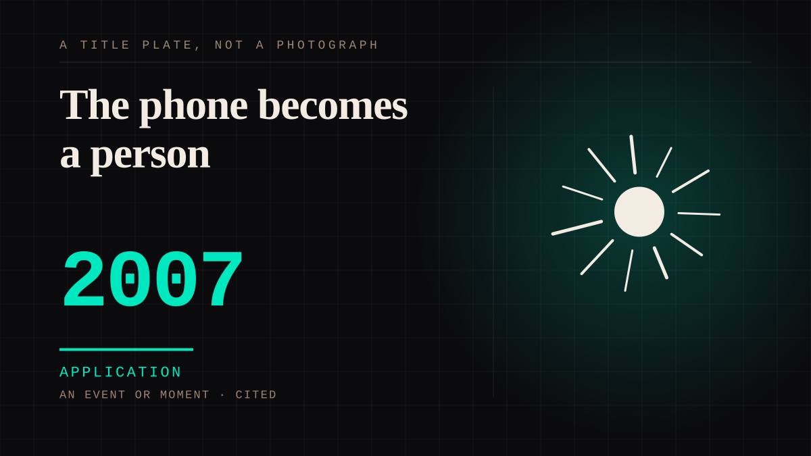

An event or moment · 2007 · Reachability
The phone becomes a person
Roughly half a billion phone numbers become dialable, a fan can in principle hear a recorded voice, and the novelty ringtone sells the idea that a performer can be present in a pocket for about four years.

The real discontinuity, and a much narrower one than the standard story. The feeling was not new; the possibility of contact was. The reply is now structurally impossible in a way a letter never was - an email is not paper, it does not have to be opened, and the person reading it has a thousand. The conditions that made a reply work were small enough for one human to hold, and they are gone permanently.
Application. One-sided attachment put to work on purpose. Creator economies, community, fandom as infrastructure, and the things that genuinely help people. Not automatically good - a tool with an obvious use is a tool that will also get a bad one.
Consideration. The part where somebody stops and thinks. The research, the diagnosis, the ethics, the lawsuits, the regulators. Roughly fifty years of arguing with itself about whether this is a relationship.
Where it sits
2000 2000-2009 · 2007 2009
Provenance · 2 source record(s)
- retrievableTHE PHONE AS A PERSON, MEASURED. Idol messaging apps are described in the literature as simulating parasocial interaction by allowing one-to-one texting with a performer, deepening the 'intensification' stage of attachment. Every user who used one said it increased their sense of connectionThe Psychological Impact of Parasocial Relationships on Adolescent K-pop Fans, citing Aw & Chua (2021), Kim & Song (2016), Bond (2016). ↗
- unverifiedVerbatim, from a 14-18 year old: 'It (Weverse) makes me feel like I'm talking to one of my best friends.' That is the whole entry, said by someone who had no vocabulary for itThe Psychological Impact of Parasocial Relationships on Adolescent K-pop Fans. ↗
Connected · 3 out, 3 in
Reported as a story
It sits in
The full timeline → · The database → · See it in the atlas →